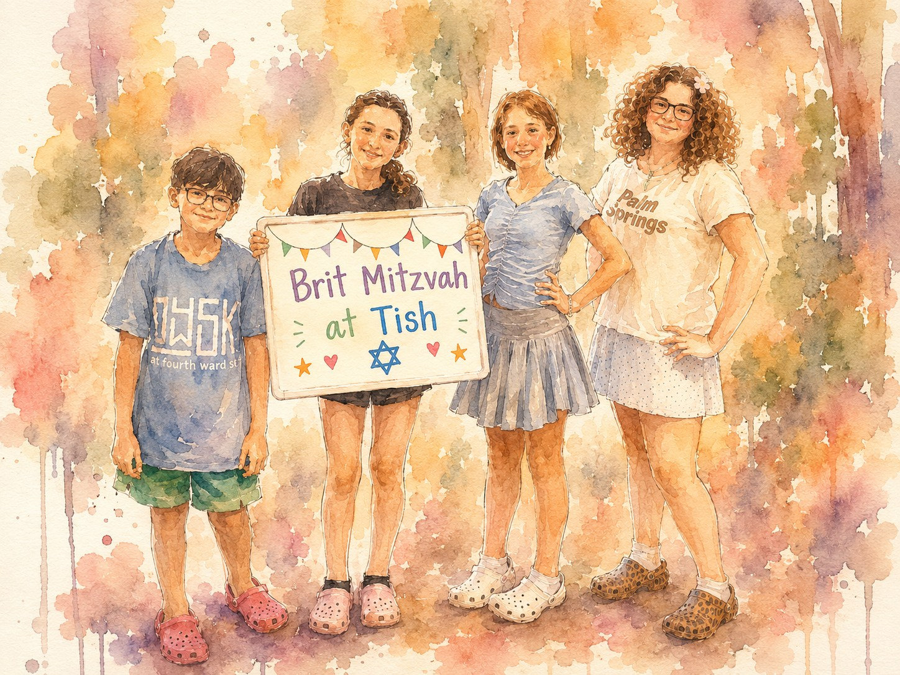

A Tish Program
Brit Mitzvah
at Tish
A two-year journey for families in Atlanta, rooted in community, guided by real relationships, and designed to make Jewish coming-of-age meaningful.

A two-year journey for families in Atlanta, rooted in community, guided by real relationships, and designed to make Jewish coming-of-age meaningful.
Most bar or bat mitzvah prep is about the ceremony — learn your portion, rehearse, get through the day. Led by a dedicated educator, Tish's Brit Mitzvah program uses the Moving Traditions framework to guide each cohort through identity, values, and what Jewish life means to them.
More than a class. More than a tutor. A community.
About once a month from August through May, plus retreats and holiday gatherings.
Introduction to Jewish values, music, and outdoor adventure. Guest speakers from Atlanta's Jewish community. Kids start showing up at Tish events as participants. Parents host and join in.
Kids go deeper into Jewish text and practice, each paired with a mentor from the Tish community. Students lead Havdalah, organize service projects, and run Shabbaton activities. The year culminates in each student leading a community event.
One camping retreat per year — Shabbat in nature that builds bonds between kids, families, and the broader community.
Sessions blend text study, music, time outdoors, and home-based ritual practice. Hands-on, not theoretical.
The program is woven into Tish life. Families show up at Shabbat dinners, Havdalah, holidays, and potlucks.
“Our child isn’t just preparing for a Brit Mitzvah, they’re growing into a more confident, thoughtful person. Sometimes they’re meeting at the park, sometimes at a coffee shop, and it keeps the experience fresh and engaging. It never feels static.”
— Parent, first cohort
“It’s really fun and interactive. My teacher makes the lessons and Torah feel connected to my life, so I understand it better. I feel like I’m always learning something new and interesting. In my other program, it felt like we went over the same things again and again every year.”
— Student, first cohort
In 2024, a handful of Tish parents asked: what if bar mitzvah or bat mitzvah prep actually changed your family instead of just being something you survived? They couldn't find it — so they built it.

Families typically enroll in 5th grade, with the celebration around age 12–13. If your timing is different, reach out.
Tish is a Jewish community in Atlanta. We gather for Shabbat, Havdalah, holidays, singing, and shared meals. Learn more about us →
The ceremony isn't part of the program — every family does it differently. We'll help you think through options, share what other families have done, and connect you with rabbis and tutors who know this community.
No. The program is open to all Jewish families in the Atlanta area, regardless of affiliation.
Moving Traditions is a nationally recognized organization that develops curricula for Jewish adolescent development. Their approach is participatory and embodied — kids move, discuss, and do. Our program is built on their framework.
Sessions happen monthly on Sundays, about two hours each, at homes and gathering spaces around Atlanta. Retreats are overnight camping trips off-site. The full schedule goes out before the year begins.
The sessions are designed for children, as is the retreat. During the year, we hold two parent-focused sessions, and the facilitator also hosts smaller gatherings at her home, local parks, coffee shops, and other casual community spaces.
Contact us to learn more about tuition. Financial assistance is available — we don't want cost to keep anyone out.
Cohorts are small — 4 to 6 families. We need enough families to form one. Registering early helps us plan and ensures your family has a spot.
We're forming the next cohort now. Tell us about your family.
No commitment — just a conversation.